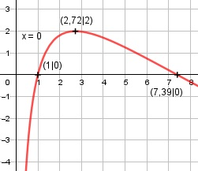

Aufgabe 161 f(x) = 2 * ln (x) * (2 - ln x) Produktregel erste Ableitung: 2 u = 2 * ln x, u' = --- x 1 v = 2 - ln x, v' = - --- x 2 1 f'(x) = --- * (2 - ln x) + (- ---) * 2 * ln x x x 4 - 2 * ln (x) - 2 * ln x f'(x) = --------------------------- x 4 - 4 * ln x f'(x) = -------------- = (4 - 4 * ln x) * x-1 x Produktregel zweite Ableitung: u = x-1, u' = -x-2 4 v = 4 - 4 * ln x, v' = - --- x 4 f''(x) = -x-2 * (4 - 4 * ln x) + (- ---) * x-1 x f''(x) = - x-2 * (4 - 4 * ln x) - 4 * x-2 f''(x) = x-2 * (-4 + 4 * ln (x) - 4) f''(x) = x-2 * (4 * ln (x) - 8) 4 * ln (x) - 8 f''(x) = ---------------- x2 Zur Beurteilung, ob f'''(x) ≠ 0: (Begründung siehe Aufgabe 105) 4 u = 4 * ln (x) - 8, u' = --- x 4 --- u' x 4 f'''(x) = --- = ------ = ---- ≠ 0 fur x ≠ 0 v x2 x3 Wegen ln x, muss x > 0 sein Definitionsbereich: 0 < x < ∞ Senkrechte Asymptote: Für x --> 0 geht f(x) --> -∞ Wertebereich: f(x) ist dann am größten, wenn x = 2,72 (Extrempunkt) und f(2,72) = 2 --> -∞ < f(x) ≤ 2 Symmetrie zur y-Achse bzw. zum Punkt (0|0): f(-x) = 2 * ln (-x) * (2 - ln -x) ≠ f(x) --> keine Achsensymmetrie -f(-x) = -(2 * ln (-x) * (2 - ln -x)) ≠ f(x) --> keine Punktsymmetrie Nullstellen: f(x) = 0 2 * ln x * (2 - ln x) = 0 2 * ln x = 0 |:2 ln x = 0 x1 = e0 = 1 N1(1|0) 2 - ln x = 0 |+ln x ln x = 2 x2 = e2 = 7,39 N2(7,39|0) Schnittpunkt mit der y-Achse: x = 0 x = 0 liegt nicht im Definitionsbereich --> kein Schnittpunkt Extrempunkte: f'(x) = 0 4 - 4 * ln x -------------- = 0 |*x x 4 - 4 * ln x = 0 |+4 * ln x 4 * ln x = 4 |:4 ln x = 1 x = e = 2,72 f(e) = 2 * ln (e) * (2 - ln e) = 2 4 * ln (2) - 8 f''(2) = ----------------- < 0 22 --> Hochpunkt (2,72|2) Wendepunkte: f''(x) = 0 4 * ln (x) - 8 ---------------- = 0 |*x2 x2 4 * ln (x) - 8 = 0 |+8 4 * ln x = 8 |:4 ln x = 2 x = e2 = 7,39 WP (7,39|0) Graph:
